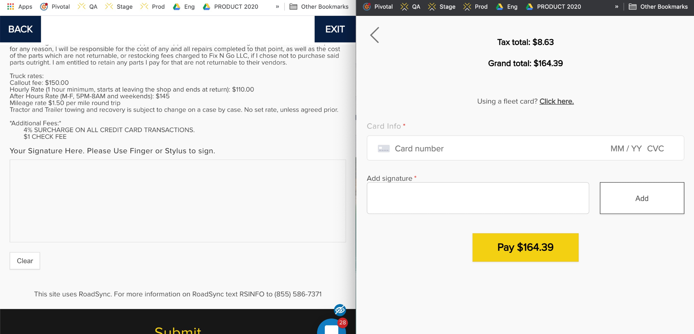
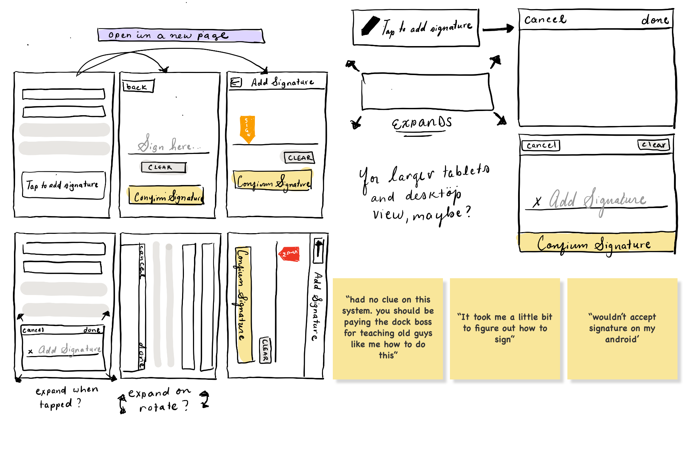
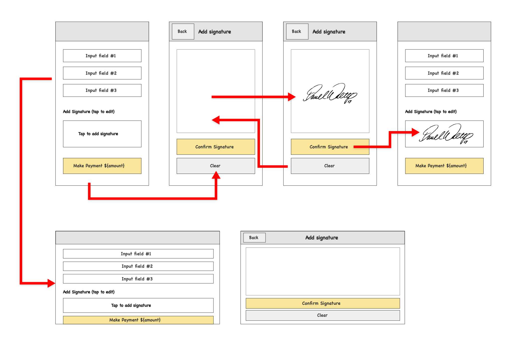

UX & Visual Design | 2020 - 2021
Improving Roadsync's
Trucker Experience
Overview
RoadSync is a logistics payment software with a variety of users, both B2B and B2C. Its B2B
users consist of Warehouses, Carrier
Services, and Tow & Repair while its B2C users are the truck drivers making deliveries.
RoadSync’s goal is to expand its B2C user base and establish itself as the go-to application for
truck drivers on the road.
As the sole UX and visual designer, I had the opportunity to wear a lot of hats while
discovering ways
to activate and delight them.
My Design Process
Example Scenario
Standardizing the "Add Signature" experience across different parts of RoadSync's application
Defining the Problem
The signature experience was different across different areas of RoadSync's app.
Sketching
The signature experience was different across different areas of RoadSync's app.
Low-Fidelity Mockups
The signature experience was different across different areas of RoadSync's app.
Evaluating Research
To figure out what drivers wanted out of their digital experience, we needed to learn more about them as people. Unfortunately, we ran into one big problem: it was difficult to find truck drivers interested in participating in user interviews. Luckily, the ubiquity of social media gave us many other avenues of exploration into their lives and minds.
Affinity Mapping
Personas
After compiling all our research, we developed personas reflecting RoadSync's major user bases: truck drivers, carriers, brokers, and tow and repair services. For the purpose of this case study, the truck driver and owner-operator personas were the most relevant as they'd be the primary users of RoadSync's B2C features.
Findings
The process for paying and reimbursing a driver for delivering a load can take up to 2 - 4 months.
Carriers and brokers don't start the payment process for completed deliveries until they receive a proof of delivery and an invoice from the driver.
Once a truck driver arrives at their destination, a third party (e.g. warehouse worker) comes out to the dock to unload the contents of the truck. This can save the driver the time and energy it takes to unload their truck themselves, but usually comes at a $50 - $400 fee called a lumper fee that comes out of the truck driver's pocket.
Solution
Trucking Invoices
A digital invoice creation system allowing truckers to create an invoice from their mobile device and instantly send it to their broker or carrier.
Task Flow
This is a task flow diagram that describes the path a user might take to complete an invoice using RoadSync's Trucking Invoices, serving as the basis for user stories and the extra-low fidelity wireframes.